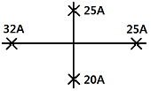

공조냉동기계기능사 (2010-07-11 기출문제)
1과목: 공조냉동안전관리
1. 재해의 직접적인 원인에 해당되는 것은?
- 불안전한 상태
- 기술적인 원인
- 관리적인 원인
- 교육적인 원인
(정답률: 87%)

2. 냉동 장치 내에 불응축 가스가 침입되었을 때 미치는 영향 중 틀린 것은?
- 압축비 증대
- 응축압력 상승
- 소요동력 증대
- 토출가스 온도저하
(정답률: 68%)
3. 작업장에서 계단을 설치할 때 폭은 몇 m 이상으로 하여야 하는가?
- 0.2
- 1
- 2
- 5
(정답률: 83%)
4. 재해방지의 기본원리인 도미노(domino) 이론의 5단계 중 재해제거를 위해 가장 중요하다고 할 수 있는 요인은?
- 가정 및 사회적 환경의 결함
- 개인적 결함
- 불안전한 행동 및 상태
- 사고
(정답률: 86%)
5. 기계설비의 안전한 사용을 위하여 지급되는 보호구를 설명한 것이다. 이 중 작업조건에 따른 적합한 보호구로 올바른 것은?
- 용접 시 불꽃 또는 물체가 날아 흩어질 위험이 있는 작업 : 보안면
- 물체가 떨어지거나 날아올 위험 또는 근로자가 감전되거나 추락할 위험이 있는 작업 : 안전대
- 감전의 위험이 있는 작업 : 보안경
- 고열에 의한 화상 등의 위험이 있는 작업 : 방화복
(정답률: 64%)
6. 소화기 보관상의 주의사항으로 잘못된 것은?
- 겨울철에는 얼지 않도록 보온에 유의 한다.
- 소화기 뚜껑은 조금 열어놓고 봉인하지 않고 보관한다.
- 습기가 적고 서늘한 곳에 둔다.
- 가스를 채워 넣는 소화기는 가스를 채울 때 반드시 제조업자에게 의뢰 하도록 한다.
(정답률: 93%)
7. 공기압축기를 가동하는 때의 시작 전 점검사항에 해당되지 않은 것은?
- 공기저장 압력용기의 외관상태
- 드레인밸브의 조작 및 배수
- 압력방출장치의 기능
- 비상정지장치 및 비상하강방지장치 기능의 이상 유무
(정답률: 71%)
8. 전기용접 작업의 안전사항에 해당되지 않는 것은?
- 용접 작업 시 보호장비를 착용토록 한다.
- 홀더나 용접봉은 맨손으로 취급하지 않는다.
- 작업 전에 소화기 및 방화사를 준비한다.
- 용접이 끝나면 용접봉은 홀더에서 빼지 않는다.
(정답률: 91%)
9. 정(chisel)의 사용 시 안전관리에 적합하지 않은 것은?
- 비산 방지판을 세운다.
- 올바른 치수와 형태의 것을 사용한다.
- 칩이 끊어져 나갈 무렵에는 힘주어서 때린다.
- 담금질 한 재료는 정으로 작업하지 않는다.
(정답률: 90%)
10. 안전모가 내전압성을 가졌다는 말은 최대 몇 볼트의 전압에 견디는 것을 말하는가?
- 600V
- 720V
- 1000V
- 7000V
(정답률: 76%)
11. 고압가스안전관리법에 의거 원심식 압축기의 냉동설비 중 그 압축기의 원동기 냉동능력 산정기준으로 맞는 것은?
- 정격출력 1.0kW를 1일의 냉동능력 1톤으로 본다.
- 정격출력 1.2kW를 1일의 냉동능력 1톤으로 본다.
- 정격출력 1.5kW를 1일의 냉동능력 1톤으로 본다.
- 정격출력 2.0kW를 1일의 냉동능력 1톤으로 본다.
(정답률: 83%)
12. 보일러에 부착된 안전밸브의 구비조건 중 틀린 것은?
- 밸브 개폐 동작이 서서히 이루어질 것
- 안전밸브의 지름과 압력분출장치 크기가 적정할 것
- 정상 압력으로 될 때 분출을 정지할 것
- 보일러 정격용량 이상 분출할 수 있어야할 것
(정답률: 68%)
13. 휘발성 유류의 취급 시 지켜야 할 안전 사항으로 옳지 않은 것은?
- 실내의 공기가 외부와 차단 되도록 한다.
- 수시로 인화물질의 누설여부를 점검한다.
- 소화기를 규정에 맞게 준비하고, 평상시에 조작방법을 익혀둔다.
- 정전기가 발생하는 작업복의 착용을 금한다.
(정답률: 89%)
14. 보호구 사용 시 유의사항으로 옳지 않은 것은?
- 작업에 적절한 보호구를 선정한다.
- 작업장에는 필요한 수량의 보호구를 비치한다.
- 보호구는 사용하는데 불편이 없도록 관리를 철저히 한다.
- 작업을 할 때 개인에 따라 보호구는 사용 안 해도 된다.
(정답률: 91%)
15. 중량물을 운반하기 위하여 크레인을 사용하고자 한다. 크레인의 안전한 사용을 위해 지정거리에서 권상을 정지시키는 방호장치는?
- 과부하 방지 장치
- 권과 방지 장치
- 비상 정지 장치
- 해지 장치
(정답률: 83%)
2과목: 냉동기계
16. 어떤 냉동기를 사용하여 25℃의 순수한 물 100ℓ를 -10℃의 얼음으로 만드는데 10분이 걸렸다고 한다면, 이 냉동기는 약 몇 냉동톤인가? (단, 1냉동톤은 3320 kcal/h, 냉동기의 모든 효율은 100% 이다.)
- 3 냉동톤
- 16 냉동톤
- 20 냉동톤
- 25 냉동톤
(정답률: 51%)
17. 동관 공작용 작업 공구이다. 해당사항이 적은 것은?
- 익스팬더
- 사이징 툴
- 튜브 벤더
- 봉볼
(정답률: 87%)
18. 만액식 증발기의 전열을 좋게 하기 위한 것이 아닌 것은?
- 냉각관이 냉매액에 잠겨 있거나 접촉해 있을 것
- 증발기 관에 핀(fin)을 부착할 것
- 평균 온도차가 작고 유속이 빠를 것
- 유막이 없을 것
(정답률: 71%)
19. 다음 중 압축기와 관계없는 효율은?
- 체적효율
- 기계효율
- 압축효율
- 팽창효율
(정답률: 74%)
20. 냉동장치 내에 냉매가 부족할 때 일어나는 현상으로 옳은 것은?
- 흡입관에 서리가 보다 많이 붙는다.
- 토출압력이 높아진다.
- 냉동능력이 증가한다.
- 흡입압력이 낮아진다.
(정답률: 57%)
21. 냉동장치의 부속기기에 대한 설명에서 잘못된 것은?
- 여과기는 냉매계통중의 이물질을 제거하기 위해 사용한다.
- 암모니아 냉동장치의 유분리기에서 분리된 유(油)는 냉매와 분리 후 회수한다.
- 액순환식 냉동장치에 있어 유분리기는 압축기의 흡입부에 부착한다.
- 프레온 냉동장치에 있어서는 냉매와 유가 잘 혼합되므로 특별한 유회수장치가 필요하다.
(정답률: 57%)
22. 저단측 토출가스의 온도를 냉각시켜 고단측 압축기가 과열되는 것을 방지 하는 것은?
- 부스터
- 인터쿨러
- 콤파운드 압축기
- 익스펜션탱크
(정답률: 82%)
23. 열에 관한 설명으로 틀린 것은?
- 승화열은 고체가 기체로 되면서 주위에서 빼앗는 열량이다.
- 잠열은 물체의 상태를 바꾸는 작용을 하는 열이다.
- 현열은 상태 변화 없이 온도 변화에 필요한 열이다.
- 융해열은 현열의 일종이며, 고체를 액체로 바꾸는데 필요한 열이다.
(정답률: 76%)
24. 암모니아와 프레온 냉동 장치를 비교 설명한 것 중 옳은 것은?
- 압축기의 실린더 과열은 프렌온보다 암모니아가 심하다.
- 냉동 장치 내에 수분이 있을 경우, 장치에 미치는 영향은 프레온보다 암모니아가 심하다.
- 냉동 장치 내에 윤활유가 많은 경우, 프레온보다 암모니아가 문제성이 적다.
- 동일 조건에서는 성능, 효율 및 모든 제원이 같다.
(정답률: 54%)
25. 팽창밸브 선정 시 고려할 사항 중 관계없는 것은?
- 관 두께
- 냉동기의 냉동능력
- 사용냉매 종류
- 증발기의 형식 및 크기
(정답률: 70%)
26. 다음 중 나사용 패킹으로 냉매배관에 주로 많이 쓰이는 것은?
- 고무
- 일산화연
- 몰드
- 오일사일
(정답률: 53%)
27. 다음 설명 중 옳은 것은?
- 냉장실의 온도는 열복사에 의해서 균일하게 된다.
- 냉장실의 방열벽에는 열 전도율이 큰 재료를 사용한다.
- 물은 얼음 보다는 열 전도율이 적으나 공기보다는 크다.
- 수냉응축기에서 냉각관의 전열은 물때의 영향은 받으나 냉각수의 유속과는 관계가 없다.
(정답률: 58%)
28. 터보 냉동기의 특징을 설명한 것이다. 옳은 것은?
- 마찰부분이 많아 마모가 크다.
- 제어범위가 좁아 정밀제어가 곤란하다.
- 저온장치에서는 압축단수가 작아지며 효율이 좋다.
- 저압냉매를 사용하므로 취급이 용이하고 위험이 적다.
(정답률: 46%)
29. 냉동기 오일에 관한 설명 중 틀린 것은?
- 윤활 방식에는 비말식과 강제급유식이 있다.
- 사용 오일은 응고점이 높고 인화점이 낮아야 한다.
- 수분의 함유량이 적고 장기간 사용하여도 변질이 적어야 한다.
- 일반적으로 고속다기통 압축기의 경우 윤활유의 온도는 50~60℃ 정도이다.
(정답률: 78%)
30. 2원 냉동장치의 설명으로 볼 수가 없는 것은?
- 약 -80℃ 이하의 저온을 얻는데 사용된다.
- 비등점이 높은 냉매는 고온측 냉동기에 사용된다.
- 저온측 압축기의 흡입관에는 팽창탱크가 설치되어 있다.
- 중간 냉각기를 설치하여 고온측과 저온측을 열교환시킨다.
(정답률: 51%)
31. 다음은 용접이음용 크로스(cross)를 나타낸 것이다. 호칭표시가 맞는 것은 어느 것인가?

- 크로스 : 25A×25A×20A×32A
- 크로스 : 32A×25A×25A×20A
- 크로스 : 20A×25A×25A×32A
- 크로스 : 32A×20A×25A×25A
(정답률: 75%)
32. 전자밸브는 다음 어느 동작에 해당되는가?
- 비례동작
- 적분동작
- 미분동작
- 2위치동작
(정답률: 69%)
33. 프레온계 냉매 중에서 수소원자(H)를 가지고 있지 않은 것은?
- R - 21
- R - 22
- R - 502
- R - 114
(정답률: 62%)
34. 공정점이 -55℃ 이고 저온용 브라인으로서 일반적으로 제빙, 냉장 및 공업용으로 많이 사용되고 있는 것은?
- 염화칼슘
- 염화나트륨
- 염화마그네슘
- 프로필렌글리콜
(정답률: 75%)
35. 소요 냉각수량 120ℓ/min, 냉각수 입출구 온도차 6℃인 수냉 응축기의 응축부하는 몇 kcal/h 인가?
- 6,400
- 12,000
- 14,400
- 43,200
(정답률: 50%)
36. 기준냉동사이클의 증발 과정에서 증발압력과 증발온도는 어떻게 변화 하는가?
- 압력과 온도가 모두 상승한다.
- 압력과 온도가 모두 일정하다.
- 압력은 상승하고 온도는 일정하다.
- 압력은 일정하고 온도는 상승한다.
(정답률: 67%)
37. 회전식 압축기의 특징에 해당 되지 않는 것은?
- 조립이나 조정에 있어서 고도의 정밀도가 요구된다.
- 대형압축기와 저온용 압축기에 많이 사용한다.
- 왕복동식 보다 부품수가 적으며, 흡입밸브가 없다.
- 압축이 연속적으로 이루어져 진공펌프로도 사용된다.
(정답률: 58%)
38. 가용전(fusible plug)에 대한 설명으로 틀린 것은?
- 불의의 사고(화재 등)시 일정온도에서 녹아 냉동장치의 파손을 방지하는 역할을 한다.
- 용융점은 냉동기에서 68~75℃ 이하로 한다.
- 구성 성분은 주석, 구리, 납으로 되어 있다.
- 토출가스의 영향을 직접 받지 않는 곳에 설치해야 한다.
(정답률: 76%)
39. 일반적으로 보온재와 보냉재를 구분하는 기준으로 맞는 것은?
- 사용압력
- 내화도
- 열전도율
- 안전사용 온도
(정답률: 55%)
40. 단단 증기압축식 이론 냉동사이클에서 응축부하가 10kW이고 냉동능력이 6kW일 때 이론 성적계수는 얼마인가?
- 0.6
- 1.5
- 1.67
- 2.5
(정답률: 43%)
41. 다음 중 흡수식냉동기의 용량제어방법이 아닌 것은?
- 구동열원 입구제어
- 증기토출 제어
- 발생기 공급 용액량 조절
- 증발기 압력제어
(정답률: 46%)
42. 서로 다른 지름의 관을 이을 때 사용되는 것은?
- 소켓
- 유니온
- 플러그
- 부싱
(정답률: 71%)
43. 어떤 물질의 산성, 알칼리성 여부를 측정하는 단위는?
- CHU
- RT
- pH
- B.T.U
(정답률: 90%)
44. 팽창변 직후의 냉매의 건조도 X=0.14이고, 증발잠열이 400kcal/kg이라면 냉동효과는?
- 56 kcal/kg
- 213 kcal/kg
- 344 kcal/kg
- 566 kcal/kg
(정답률: 55%)
45. 지열을 이용하는 열펌프(Heat Pump)의 종류가 아닌 것은?
- 엔진구동 열펌프
- 지하수 이용 열펌프
- 지표수 이용 열펌프
- 지중열 이용 열펌프
(정답률: 84%)
3과목: 공기조화
46. 다음 수관식 보일러에 대한 설명으로 틀린 것은?
- 부하변동에 따른 압력변화가 크다.
- 급수의 순도가 낮아도 스케일 발생이 잘 안 된다.
- 보유수량이 적어 파열시 피해가 적다.
- 고온 고압의 증기발생으로 열의 이용도를 높였다.
(정답률: 50%)
47. 공기조화설비의 구성을 나타낸 것 중 관계가 없는 것은?
- 열원장치 : 가열기, 펌프
- 공기처리장치 : 냉각기, 에어필터
- 열운반장치 : 송풍기, 덕트
- 자동제어장치 : 온도조절장치, 습도조절장치
(정답률: 56%)
48. 개별공조방식의 특징 설명으로 틀린 것은?
- 설치 및 철거가 간편하다.
- 개별제어가 어렵다.
- 히트 펌프식은 냉난방을 겸할 수 있다.
- 실내 유닛이 분리되어 있지 않는 경우는 소음과 진동이 있다.
(정답률: 79%)
49. 복사난방에 관한 설명 중 맞지 않는 것은?
- 바닥면의 이용도가 높고 열손실이 적다.
- 단열층 공사비가 많이 들고 배관의 고장 발견이 어렵다.
- 대류 난방에 비하여 설비비가 많이 든다.
- 방열체의 열용량이 적으므로 외기온도에 따라 방열량의 조절이 쉽다.
(정답률: 73%)
50. 고온수 난방의 특징으로 적당하지 않은 것은?
- 고온수 난방은 증기난방에 비하여 연료절약이 된다.
- 고온수 난방방식의 설계는 일반적인 온수난방 방식보다 쉽다.
- 공급과 환수의 온도차를 크게 할 수 있으므로 열수송량이 크다.
- 장거리 열수송에 고온수일수록 배관경이 작아진다.
(정답률: 50%)
51. 덕트의 부속품에 대한 설명으로 잘못된 것은?
- 소형의 풍량 조절용으로는 버터플라이 댐퍼를 사용한다.
- 공조덕트의 분기부에는 베인형 댐퍼를 사용한다.
- 화재시 화염이 덕트 내에 침입하였을 때 자동적으로 폐쇄되도록 방화댐퍼를 사용한다.
- 화재의 초기 시 연기감지로 다른 방화구역에 연기가 침입하는 것을 방지하는 방연댐퍼를 사용한다.
(정답률: 62%)
52. 어떤 상태의 공기가 노점온도보다 낮은 냉각코일을 통과하였을 때의 상태를 설명한 것 중 틀린 것은?
- 절대습도 저하
- 비체적 저하
- 건구온도 저하
- 상대습도 저하
(정답률: 56%)
53. 다음 중 공기의 감습방법에 해당되지 않는 것은?
- 흡수식
- 흡착식
- 냉각식
- 가열식
(정답률: 66%)
54. 1차공조기로 부터 보내온 고속공기가 노즐 속을 통과할 때의 유인력에 의하여 2차 공기를 유인하여 냉각 또는 가열하는 방식을 무엇이라고 하는가?
- 패키지 유닛방식
- 유인 유닛방식
- FCU방식
- 바이패스방식
(정답률: 74%)
55. 연도나 굴뚝으로 배출되는 배기가스에 선회력을 부여함으로서 원심력에 의해 연소가스 중에 있는 입자를 제거하는 집진기는?
- 세정식 집진기
- 싸이크론 집진기
- 전기 집진기
- 자석식 집진기
(정답률: 83%)
56. 다음의 냉방부하 중에서 현열 부하만 발생하는 것은?
- 극간풍에 의한 열량
- 인체의 발생 열량
- 벽체로부터의 열량
- 실내기구의 발생 열량
(정답률: 49%)
57. 다음 중 현열비를 구하는 식은?
- 현열비 = 현열부하 / 잠열부하
- 현열비 = 잠열부하 / (잠열부하＋현열부하)
- 현열비 = 현열부하 / (잠열부하＋현열부하)
- 현열비 = 잠열부하 / 현열부하
(정답률: 69%)
58. 다음 중 온풍난방의 장점이 아닌 것은?
- 예열시간이 짧아 비교적 연료소비량이 적다.
- 온도의 자동제어가 용이하다.
- 필터를 채택하므로 깨끗한 공기를 유지할 수 있다.
- 실내온도 분포가 균등하다.
(정답률: 67%)
59. 화재발생시 연기를 방연구획 등의 건축물의 일정한 구획 내에 가둬넣고 이것을 건물에서 배출하는 설비는?
- 환기설비
- 급기설비
- 통풍설비
- 배연설비
(정답률: 78%)
60. 상대습도(RH)가 100%일 때 동일하지 않은 온도는?
- 건구온도
- 습구온도
- 작용온도
- 노점온도
(정답률: 43%)